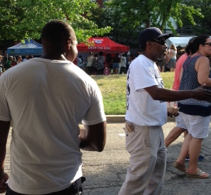

Join the Fight
Returning citizens on felony parole and probation in Maryland are now able to vote!! This is thanks to the hard work of many Marylanders, including returning citizens. We know that the people passing criminal justice legislation are usually not impacted, and we need to have a voice in the policies that affect us! If you are looking to give back and be part of a growing movement for positive change through criminal justice reform, this is the place for you! We will let you know what different groups around Baltimore are doing to fight for progress and justice, and how you can get involved!